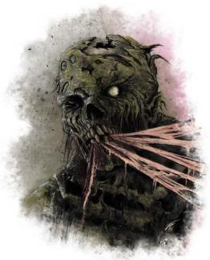
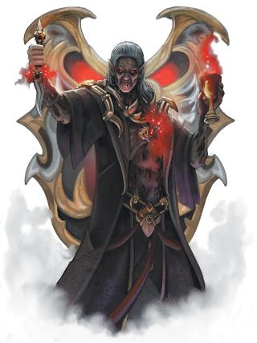

龙与地下城中有无数种不死生物。这里概述了一些最常见的种类，以及如何将它们融入艾伯伦。
没有心智的骷髅与僵尸是大部分死灵法师的得力手下。它们可以在玛伯尔显能区域自发形成；这样的不死生物是恶毒的；尽管在与坎纳斯打了一个世纪的战争之后，大多数人都了解骷髅和僵尸可以受凡人意志控制这一概念。然而，如果你是一名打算带着亡灵同伴一起四处走动的死灵法师，你仍然需要应对一些挑战。尽管人们知道骷髅和僵尸不一定是危险的，但很少有平民喜欢和他们在一起。在坎纳斯之外，许多商家拒绝让这些亡灵进入他们的经营场所——而且，无论死灵法师的国籍如何，大多数人倾向将僵尸和骷髅跟坎纳斯联系起来。因此，如果一个城镇曾在终末战争时遭受坎纳斯袭击，其城镇居民很可能会将仇恨转移到任何路过城镇的死灵法师身上。
死灵法术在伽利法法典下并不是违法行为，但盗墓是！执法人员可以要求死灵法师出示他们对随从尸体的所有权的证明——尽管大多数执法人员很少这样做。在坎纳斯，亡灵部会授权死灵法师“让任何坎纳斯公民的尸体服役”，因此他们很容易获得合法的所有权。同样，沃尔之血的祭司长期以来一直在使用该信仰追随者的尸体，他们的权利通常也是无争议的。 然而你要是杀了人然后把人当丧尸拉起来，萨恩守卫也许不一定能证明你杀了那人，但绝对可以以盗尸罪起诉你！-这通常会导致罚款和僵尸被没收（和销毁）。
一个典型的僵尸故事情节由杜鲁尔僵尸推动——它智力有限，没有意识到自己已经死了，并努力完成最后一项任务或找到所爱的人。然而，目前流传的一个流行的僵尸故事却有不同的点子。《最后的伯爵》是吟游诗人凯斯勒Kessler的喜剧；这个故事围绕着一个坎纳斯伯爵展开-他的仆人将他复活为僵尸，试图将不死贵族用作傀儡以控制庄园。由于这部喜剧很受欢迎，僵尸目前在萨恩和沃奥特 Wroat 被视作具有喜剧吸引力；如果一个死灵法师身边只有一个穿着华丽衣服的僵尸，他们会把它视作一个搞笑的笑话。
塔兰塔平原的半身人讲述了饥饿猎人欧拉斯卡Orlasca 的故事。作为他的时代最伟大的猎人，欧拉斯卡发誓要吃掉他杀死的每一个生物。当他不得不杀死另一个半身人时，他的誓言迫使他吞噬他的敌人......然后他对半身人的肉产生了一种饥渴怪癖。在屠杀了他自己的整个部落之后，欧拉斯卡终于被击杀了。但他的饥饿是如此之巨大，以至于他的灵魂徘徊不去，最后堕落成一种试图努力维持半身人形态的并非生物的存在。塔兰塔人的基本禁忌之一是永远不要吃那些会同类相食的生物——因为这会让欧拉斯卡的灵魂进入你体内并将你变成食尸鬼。
食尸鬼是五国中最常见的不死威胁，尤其常见于玛伯尔显灵区，它们会在玛伯尔相接期间、强大的死灵力量被释放后或任何貌似同时死去许多人的地方自发生成；大型战场上常常徘徊着产生在尸体中的食尸鬼。尽管在理论上拥有知觉，玛伯尔食尸鬼对生前的生活没有记忆并且被的饥饿所驱使。警戒之眠Restful Watch和银焰圣堂武士都会在墓地和下水道巡逻并寻找食尸鬼，而大部分城市五国对它们发布悬赏（基于威胁程度的价值）。
在骷髅和僵尸之外，食尸鬼是最容易制造的不死生物；只需要将尸体和玛伯尔绑定。但是，这些食尸鬼比僵尸或骷髅更具攻击性；除非被经常性地控制,它们总会寻求满足自己无尽的饥饿。坎纳斯在终末战争期间试验过食尸鬼部队：控制它们所需的资源太多了,；在少数情况下, 他们用次元袋将成群结队的食尸鬼投放到敌人后方,从而在敌人中播下恐怖的种子。
玛伯尔食尸鬼是野蛮的，但存在着其他种类。塔兰塔平原的食尸鬼以野兽的形式生存，塔兰塔人说，所有这类生物都受到欧拉斯卡灵魂的引导。这些食尸鬼能表现出惊人的狡猾和群体战术。此外，一整群食尸鬼有时会用一种声音说话（使用半身人语，而非通用语）。“欧拉斯卡食尸鬼Orlasca Ghoul Template”边栏提供了将任何野兽变成食尸鬼的模板。另一种食尸鬼可以在“守门人”的邪教中找到。这些邪教徒相信食人仪式可以保护他们免于疾病、衰老和死亡。它确实如此——但随着时间的推移，这些仪式将邪教徒变成了食尸鬼。 这些食尸鬼保留了他们完整的记忆和智慧，但越来越多地被他们超自然的饥饿所驱使。一些食尸鬼只要吃饱了就能保持原来的凡人模样，但如果食物供应减少，它们的不死本性就会逐渐显露。这类食尸鬼有可能与吸血鬼形成互惠互利的伙伴关系；吸血鬼以活人的血液为食，而食尸鬼则吃掉剩下的肉。
欧拉斯卡食尸鬼模板Orlasca Ghoul Template
你可以通过这些改变，将任何野兽的游戏数据转为欧拉斯卡食尸鬼。 类型Type。欧拉斯卡食尸鬼的生物类型从野兽变为不死生物。 伤害免疫Damage Immunities。食尸鬼除了获得任何原有的免疫外，还获得了对毒素伤害的免疫。 状态条件免疫Condition Immunities。食尸鬼不能被魅惑或中毒；它也不会受到力竭的影响。 感官Senses。除了先前的感官，食尸鬼还获得 60 英尺的黑暗视觉。 欧拉斯卡的诅咒Curse of Orlasca。每回合一次，当欧拉斯卡食尸鬼用近战攻击击中精灵或不死生物以外的敌人时，目标必须成功通过 DC 10 的体质豁免，否则将麻痹 1 分钟。 目标可以在其每个回合结束时重复豁免检定，成功则结束对自身的影响。 非凡本质Unusual Nature。食尸鬼不需要空气、饮料或睡眠。它失去了任何生前的生理特性——例如两栖——因为这表示一个活生生的生物。 饥饿和声Hungry Chorus（可选）：食尸鬼说半身语。 当它说话时，在它120英尺范围内的每个友好的奥拉斯卡食尸鬼都会加入它，齐声说出同样的话。 狡诈追猎者Cunning Tracker（可选）：食尸鬼获得生存技能的熟练，并且在追踪或感知它在过去物的检定中具有优势。24 小时内对其造成伤害的生转为欧拉斯卡食尸鬼。 |
大多数情况下，妖鬼是古老的食尸鬼。食尸鬼存活的时间越长，驱动它的力量就会越深地渗入它的肉体——玛伯尔妖鬼和欧拉斯卡妖鬼比食尸鬼更聪明，足以制定更狡猾的计划。 卡塔什卡妖鬼保留了他们前世的心理属性值，也有能力控制他们的恶臭；食尸鬼教派的领袖通常是妖鬼。
拉扎尔公国的人民讲述着白骨之船和血帆的闹鬼船只的故事。但暴风湾的水手会提到深红之影Crimson Shadow——一艘船和它的船长的名字，一个科瓦拉Khoravar海盗和她的快速单桅帆船。深红之影不会在光天化日之下中掠夺船只，而是会在黑暗的掩护下接近她的目标。在一些故事中，深红之影号拥有一群行动迅速且无声无息的杀手；但大多数人都说她会独自登上一艘敌船并杀死所有船员——将最珍贵的货物带上她的单桅帆船，然后任由死气沉沉的敌船漂流。 经过几年的海盗活动，深红暗影被揭露为暴风湾港务长的女儿乔拉·威尔克斯 Jola Wylkes。 她的血统无法挽救她，她因罪行被绞死……但两个月后，另一艘船被发现漂流在海上，船员被屠杀。普遍的说法是，监守在看到她后在欣赏她的天赋，于是将深红之影号放回大海；只要她继续为他送来新的灵魂和他想要的宝藏，她就可以自由航行。
尸妖是死后与黑暗力量做交易的凡人。 尸妖在生前中总是高效的杀戮者——许多人是士兵或土匪，但尸妖可能是连环杀手、海盗、刺客——任何其成就引起黑暗势力注意并愿意与之讨价还价的人。 在终末战争期间，每个国家都在出现强大的战士。上个世纪最致命的尸妖之一是阿泽尔·瓦达利亚Azael Vadallia，一名维伦娜尸妖，据说他正在寻找值得加入他的亡灵战帮的战士。
与典型的尸妖讨价还价很简单：只要你继续杀戮，你就可以继续存在。不同的尸妖在不同的限制下存在，因此他们的力量可能会有所不同。 怪物图鉴中的尸妖数据块反映了典型的战士或强盗。然而，尸妖保留了他们生前的大部分记忆和技能。 例如，《Multiverse Monsters of the Multiverse》中的deathlock wight可以反映某个人是施法者。这两个游戏数据的挑战等级均为 3，但非凡的力量可能要危险得多。正常的尸妖只能将 12 名受害者复活为僵尸，但据说在历史上，掠夺者马伦Malleon the Reaver在成为尸妖后领导着数千人的军队；尽管阿泽尔·瓦达利亚只转化了他的几个受害者，但他转化的人自己会制造尸妖；它们都会成为战帮的忠实成员。
在民间传说中，人们认为尸妖与监守讨价还价。然而，大多数尸妖实际上都与马巴尔的白骨国王签订契约，后者是永恒黑夜的黑暗力量之一。一些尸妖一直保持活跃，但大多数尸妖会经历长达数年或数十年的休眠期；在此期间，尸妖的躯体如同一具尸体，其灵魂寄居在玛伯尔的白骨王国Kingdom of Bones。这常常导致某个尸妖因为被视为纯粹的传说而被忽视，因为尸妖可以消失一代人的时间，然后再回来进行杀戮。当尸妖最终被摧毁时，它的灵魂会留在白骨王国； 意志异常坚强的尸妖最后可能会以幽灵的形式回归。
可能会有一个圣武士尸妖决心用作恶者的鲜血向其赞助人缴纳什一税——但尸妖被玛伯尔的精华填充并受其黑暗力量的束缚，这往往会侵蚀受害者曾经有过的感情和同理心。
被困的灵魂Trapped Souls
一个问题是那些被尸妖杀死的人会遭遇怎样的命运。如果受害者只是死去，它的灵魂就会前往杜鲁尔；但如果受害者的尸体被尸妖复活，那么受害者的灵魂可能会被尸妖的宗主夺走——在白骨王国中受苦受难，或者被困在监守之巢Lair of the Keeper中。如果 DM 选择这种方式，那么让受害者起死回生的唯一途径就是将其灵魂从束缚中解放出来。
缚灵是一种与玛伯尔深深纠缠在一起的灵体，它永远无法在杜鲁尔真正找到遗忘。 幽灵通常是其他形式的不死生物的最终结果。 身体形态退化或被摧毁的尸鬼、木乃伊或吸血鬼可能会像缚灵一样徘徊。 缚灵的行为和能力通常取决于其原始形态。 由木乃伊形成的缚灵继续受到他们在艾伯伦的誓言的约束。 由尸鬼组成的幽灵同样继续受到他们与赞助人的契约的约束。 这样的缚灵通常与白骨国王或众泪女王相连，并且像尸鬼一样，它们可以被拉入玛巴尔很长一段时间； 最终，大多数缚灵都被永久地卷入了无尽之夜。这是缚灵的典型起源——只有当它的坟墓被扰乱时才会显现；其他时候，它住在玛伯尔。
法勒恩Farlnen的血帆Bloodsail 精灵设计了能将凡人生物转化为缚灵的仪式。这些缚灵不受尸鬼或木乃伊的契约或誓言约束，但这意味着他们以纯粹的意志维持着自己的存在；本质上，只要他们还记得自己是谁，缚灵就会一直存在。随着时间的推移，许多缚灵会失去意志力并消退，成为幽灵。罪髓女士Lady Illmarrow 知道创造缚灵的技术，并在翡翠利爪中创造了很多缚灵为她服务。其中有不少缺乏维持其存在数十年的意志，但它们可以暂时为她服务。 血帆最知名的缚灵是冷酷领主the Grim Lord瓦伦Varonaen，公国的创始人之一。尽管他的肉体在与艾伦诺死亡守卫的冲突中被摧毁，但纯粹的意志力让他以缚灵形式存在。 （你可以在第 17 章了解更多关于Varonaen和Grim Lords的信息。
幽灵是缚灵的一种次等形式。《怪物图鉴》将幽灵描述为“幽灵是类人生物愤怒而不受约束的精魄，受到阻碍而无法往生的产物。幽灵与其原本存在不具有任何联系，并且注定要在世界上永远存在。”这些不死生物拥有凡人生命的记忆痕迹，但与缚灵不同，它们不具备完整的意识或记忆，也缺乏凡人生前的技能。他们的记忆刚好足以让他们被失去的东西折磨，吸引他们消耗凡人的生命能量并摧毁这些他们无法拥有的东西。
另一种幽灵从未活过。它们是被塑造成人形的负能量，纯粹的玛伯尔力量的延伸。尽管从未活过的幽灵使用与凡人幽灵相同的数据，但它们没有人的记忆，只寻求进食。强大的死灵法师可以创造这类幽灵——它们能为卡塔什卡教派服务，也可以在监守的领地内徘徊。
在科瓦雷，鬼故事就像我们世界的一样丰富；他们讲述了类似的故事——被困在艾伯伦和杜鲁尔之间的灵魂，由完成未竟之事的动力或无法释怀的情感与记忆所驱动。
虽然幽魂至少有一些来自生前的记忆，但大部分幽灵并不完全清楚自己的状态或时间的流逝，且他们通常无法接受新的信息。他们是死者的遗存，但作为鬼魂存在并不是大多数人渴望的：这只是一部分的生命。在存在具有更高意识和记忆的不寻常幽魂的地方，大多数鬼魂也是被某些东西束缚——一个地点、一个物体、一条血脉——它们无法自由漫游。幽魂通常与 杜鲁尔联系在一起； 但即使与玛伯尔无关且不具有的伤害生者的本性，他们仍然可能是危险的，尤其是当他们被愤怒驱使或在生前总是充满仇恨时；但幽灵是被使他们远离杜鲁尔的纽带所驱使，而不是被伤害生者的饥饿所驱使。
典型的女妖是与杜鲁尔相关的幽魂，由于一场激烈的悲剧而被困在艾伯伦在一起。这场悲剧的痛苦驱使女妖激烈地攻击生者，而集中痛苦增强了女妖的悲号——并不是女妖吸干了受害者的生命，而是它造成了如此强烈的情感创伤，以至于大多数生物死于突发的心脏病或重度紧张。和大多数幽魂一样，女妖往往深陷悲剧之中，基本意识不到时间流逝，无法理解新事物。杜鲁尔女妖可以由任何种族或性别的类人生物形成；达卡尼的经典鬼故事之一是关于不会死的挽歌歌手。在创造杜鲁尔女妖时，将其精灵语替换为“它在生前掌握的语言”。
虽然大多数女妖都与杜鲁尔有联系，但被称为众泪女王Queen
of All Tears的黑暗力量创造了一种玛伯尔女妖——从遭受巨大悲剧的精灵女性中形成。这些悲楚的侍女handmaidens of sorrow（数据块如下所示）与缚灵的共同点多于与幽魂的共同点。她们通常完全意识清醒并了解周围的环境，将时间用于在困扰她们的悲剧之地和玛伯尔的泪雨王庭Court of Tears之间徘徊。
|
悲楚的侍女Handmaiden of Sorrow 中型不死生物，通常混乱邪恶 护甲等级：13（天生护甲） 生命值：71(13d8+13) 速度：0尺步行，40尺飞行（悬停） 力量 1（-5） 敏捷14（+2） 体质12（+1） 智力11（+0）感知12（+1） 魅力17（+3） 豁免：感知 +4，魅力 +6 技能：洞悉+4，察觉+4 伤害抗性：酸蚀、火焰、闪电、雷鸣；来自非魔法攻击的挥砍、穿刺和钝击 伤害免疫：冷冻，黯蚀，毒素 状态免疫：魅惑、力竭、恐惧、擒抱、麻痹、石化、中毒、倒地、束缚 感官：黑暗视觉 60 英尺，被动察觉 14 语言：通用语，精灵语 挑战等级： 6（2,300 XP） 熟练加值：+3 侦测生命Detect Life。侍女可以神奇地感知到最远 5 英里外的非不死生物或构装生物的生物。她知道他们所在的大致方向，但不知道确切位置。. 虚体移动Incorporeal Movement。侍女可以在像穿越困难地形一样穿越其他生物或物件。她在回合结束时若处于物件内则受到5（1d10）力场伤害。 玛伯尔廷臣Mabaran Courtier。侍女在对抗驱散不死生物效应的豁免检定上具有优势。 不死本质Undead Nature。侍女不需要空气、食物、饮水和睡眠。 动作 腐化之触Corrupting Touch。近战法术攻击： +5 命中，触及5 ft，单一目标。伤害：16 (4d6 + 2) 黯蚀伤害。 共饮绝望Shared Despair。侍女60 英尺范围内的每个能看到她的非不死生物都必须成功通过 DC 14 的感知豁免检定，否则将被魅惑 1 分钟。被魅惑时，当侍女在一个回合中第一次受到伤害时，该生物会受到 7（2d6）点心灵伤害。 被魅惑的目标可以在其每个回合结束时重复豁免检定，如果侍女在其视线范围内则该次检定具有劣势，成功则结束对自身的影响。如果目标豁免检定成功或效应结束，则在接下来24小时内免疫侍女的共享绝望。 哀嚎Wail（1 次/天）。当她不在阳光下时，侍女可以发出悲伤的哀号。悲号对构装生物和不死生物没有影响。她30英尺以内的所有其他能听到她声音的生物都必须进行 DC 14 的体质豁免。豁免失败时，生物的生命值降至 0。豁免成功后，生物将受到 14（4d6）点心灵伤害。 |
多见于艾伦诺精灵中，黎明幽灵是一种实际上是不朽生物的幽魂，而非和杜鲁尔或玛伯尔绑定。每个黎明幽灵都必须绑定到某物——一个地点或一个魂灵偶像（在探秘艾伯伦中讨论过）——但其显现能力与它从一个社区那里得到的奉献相关。因此，您可能会在艾伦诺酒馆中发现吟游诗人的黎明幽灵招待顾客；顾客的喜悦使它能够保持形态并与世界互动。
黎明幽灵可以像幽魂一样附身凡人； 然而，大多数黎明幽灵不能离开他们所绑定的物体或位置超过 10 英里，即使在附身凡人时也是如此。 一些艾伦诺精灵愿意让黎明幽灵占据他们，使死去的精灵直接与其后代互动； 然而，一个自愿的宿主头脑通常也不能维持这种附身超过几个小时或几天——这取决于他们的意志力——之后幽灵就会被驱逐出去。
“你肯定听说过哈尔顿·德·卡尼斯，斯塔利拉斯库尔Starilaskur的吸血鬼公子。在接管卡尼斯家族在当地的总管职位后，他开始全天不断地运营工厂，以满足战争的需要。传说，他强迫劳工留在岗位上，将任何挑战他的人折磨示众；而当他们受伤时，他便会喝下他们的血。人们向一位公爵祈求救助，但他受制于哈尔顿，对人民的哭喊充耳不闻。不久后，哈尔顿开始在工厂里使用战俘。从这时起，他才真正开始让工人劳动到死——谁会在乎这些变成了尸体和美味鲜血的人？60年过去了，哈尔顿依旧是主管；他无法继续使用战俘了，但我听说他开始招募塞尔难民……”
每个人都听说过吸血鬼——尽管大多数人从未见过他们。结果，人们很容易在没有吸血鬼的地方看到吸血鬼。有人非常残忍或嗜杀？不合常理的长寿？我觉得这听起来像个吸血鬼！哈尔顿·德·卡尼斯或许确实是个用他的劳工解渴的吸血鬼，但也可能只是个无情的工厂主，而这些耸人听闻的故事仅是传言。如果他确实在这个职位上待了60年，可能是因为他服用了实验性的炼金药品延年益寿，或者……现在的哈尔顿只是启发怪谈的那个人的儿子。所以就算人们都说哈尔顿是吸血鬼，也只有DM知道他到底是不是
吸血鬼不会自然出现——更确切地说，他们不会在玛伯尔的显能区域自发生成。创造吸血鬼是一项死灵术壮举，使一个类人生物被玛伯尔的力量浸染。不过，既然在创造一个吸血鬼后很容易产生更多的吸血鬼，为什么吸血鬼还是很少见呢？——一个基本原因是，当个吸血鬼并不容易。和玛伯尔绑定让吸血鬼对活人的鲜血和生命力充满饥渴。随着时间流逝，吸血鬼将更难不将生者视为猎物。意志脆弱的吸血鬼会迅速堕落为一个野蛮的掠食者，他们使用吸血鬼衍体的数据，而其智力属性更多反映的狡诈而非理性；对吸血鬼而言，保持人格需要意志强大，而保持对其他生物的同理心则需要更强。就是为什么吸血鬼被视作怪物食尸鬼般的杀手，需要被银焰圣堂武士、杜·哈拉圣武士和艾伦诺死亡守卫摧毁。这是吸血鬼不去制造大批衍体的另一个原因：他们会变得凶残，然后吸引圣武士到镇上进行一场净化。不死生物在伽利法法典中没有人权，摧毁吸血鬼不算谋杀——不过，你最好在杀死他之前确认市长真的是个吸血鬼。
人们所知的第一个吸血鬼在巨人时代被卡巴林精灵创造，沃尔家族重现了这些技术，并在埃伦诺创造了几条吸血鬼血脉。在不朽评议会根除沃尔家族line of Vol时，其盟友被允许逃离——有些人逃离到了法勒恩岛并建立了血帆公国Bloodsail Principality，而其他人分散在大陆西部在今天属于坎纳斯的地方，并参与了沃尔之血的创立。这些精灵带着吸血鬼一起，故绝大多数科瓦雷吸血鬼能将其血统最终追溯回艾伦诺。话虽如此，沃尔家族存在过数千年，而有些成员早在死亡死亡出现前就来到了科瓦雷。科瓦雷最古老的吸血鬼之一，纳萨尔氏族的大地精挽歌咏者伊尔阿拉Iraala，在帝国毁灭前上千年通过和沃尔家族交易成为吸血鬼。一个西部的吸血鬼可以将吸血统上溯到伊尔阿拉血统，并最终追溯回艾伦诺。
尽管卡巴林吸血鬼是最常见的来源，也有些其他方法能创造吸血鬼。玛伯尔的白骨国王可以将凡人转化为吸血鬼，这种吸血鬼不会将受害者转化为吸血鬼。而是将其变成食尸鬼；当他们被摧毁后，他们的魂魄会被吸引回到白骨国王的领域，并在那里作为缚灵存在。除此之外，还有些监守信徒成为吸血鬼的事例，这种吸血鬼完全不能创造衍生体。他们的饥渴是监守贪欲的体现，而被他们杀死的生物灵魂可能会被束缚——如同监守之牙的效应。
其他形式的吸血鬼或许存在——比如庞南加兰penanggalan*——但他们由不同文化发明的不同仪式创造，且不会像技术一样四处传播。当你使用这些吸血鬼变体时，请认真思考其来源，他们是和大魔“守门人”卡塔什卡相关，或者被巫王之一创造？
（*注：查了一下，penanggalan是一种马来西亚民间传说里的吸血怪物，差不多是类似飞头蛮的年轻女性……）
根据DM的决定，每条吸血鬼血脉——卡巴林、白骨国王、监守——拥有不同的弱点，比如骨王吸血鬼不会被流水伤害，但拥有火焰易伤；同时，卡巴林吸血鬼进入房屋不需要许可，但他们在离开后不能返回。吸血鬼弱点表格提供了出人意料的弱点，有些能直接换掉其数据中的特性，而另一些则部分取代原特性或者额外添加——取决于你的判断。所有相同血统的吸血鬼共享同一个弱点，但具体是哪个则由dm决定，冒险者可能要通过奥秘或宗教技能检定来准确辨别一种吸血鬼和其弱点。
|
D12 |
吸血鬼弱点细节 |
|
1 |
净化之焰Cleansing Flame。吸血鬼对火焰伤害易伤。在它可以看到小型或更大的明火时，它在攻击检定和属性检定上具有劣势。[代替流水之伤] |
|
2 |
强制计数Compulsive Counting。如果一个生物在吸血鬼面前撒下种子，吸血鬼必须在它的每个回合开始时进行一次 DC 20 的魅力豁免。 每次豁免失败，它都必须使用它的动作来计算种子数。 成功豁免后，它会抵抗冲动，效果结束，并失去此弱点 1 天。 |
|
3 |
不朽束缚Deathless Binding。将一枚Targath*指环固定在吸血鬼的手指、手或脖子上，吸血鬼就会瘫痪，直到戒指被取下。[代替木桩穿心] （*WIKI上查了一下，Targath和晶钢、拜拾克一样是特殊材料，但是没找到译名；看Deathless估计和艾伦诺有关，感觉大概率是艾伦诺那边的特殊木材之一） |
|
4 |
腐朽吸引Drawn to Decay。如果吸血鬼看到一个或多个生物受到黯蚀伤害，在吸血鬼的下一轮，它会被吸引到它看到的受到最多黯蚀的生物。吸血鬼必须在移动中结束它的回合，在避免明显伤害的情况下尽可能靠近那个生物；否则它受到20点光耀伤害。 |
|
5 |
监守的贪婪Keeper’s Greed。吸血鬼必须接受提供给它的任何礼物。 |
|
6 |
满月归位Lunar Herding。在任何超过一个月亮是满月的夜晚，吸血鬼在攻击检定、属性检定和豁免检定上具有劣势。 [代替流水之伤] |
|
7 |
永不回头Never Look Back。如果吸血鬼离开一栋建筑，它在13天内不能回来[代替禁入]。 |
|
8 |
单双日Odds and Evens。吸血鬼在每个月的偶数日都对穿刺伤害拥有易伤，而在每个月的奇数日则免疫穿刺伤害。 |
|
9 |
一为监守One for the Keeper。如果吸血鬼听到一个生物说出五个相关事物的清单，它必须说出第六个相关事物。否则在黎明前，它的智力、智慧和魅力豁免取劣势，并获得一级力竭。 |
|
10 |
完美礼仪Perfect Etiquette。当被问到一个问题时，如果吸血鬼的名字被作为问题同一句话的一部分说出，吸血鬼必须如实回答问题。这个答案可以是简短的或含糊的 [代替禁入] |
|
11 |
滑行的影子Slithering Shadow。吸血鬼不能变成蝙蝠或迷雾形态，但它可以变成一条毒蛇或一群毒蛇。 当激活迷雾逃生时，吸血鬼会转变为这一集群形态。 [修改变形者和雾遁] |
|
12 |
不能见脸Unfaceable。如果吸血鬼在它的回合开始时能看到自己的图像，那么只要它能看到它，吸血鬼就会对这个图像恐惧。 |
绝大多数人熟知的概念是绑定于坟墓或神殿的不死守卫，而卡纳斯人知晓木乃伊最实用的案例；埃图尔的猩红修道院有木乃伊，而早在伽利法建立之前，木乃伊也是最常见的与人类相关的智慧不死生物。
创造木乃伊的仪式，包括防腐和木乃伊化（以及许多其他因素）——让他们通常使用木乃伊这一名称。每个人都可以成为誓缚者：该过程要求与玛伯尔连接的手段，一个熟练的死灵法师，包含木乃伊化在内的一系列仪式，以及许多稀有而昂贵的原料。创造木乃伊需要一个更本质的因素，他的誓言这些条件和要素在创造木乃伊时缺一不可，一旦被创造木乃伊，就必须遵守其誓言，因为他们将其精华绑定于身体中，以阻止被杜鲁尔带离。这就是你最后为何得到一个必须保护特定坟墓的木乃伊。即使再聪明，木乃伊也不可能选择离开坟墓不管； “守墓人”的角色就是它的定义和对它的保护。
大多数木乃伊都受到限制性誓言的约束；例如，许多血帆木乃伊都绑定在他们的船上。誓言的限制越少，仪式所需的力量和要素就越多。玛勒文诺Malevanor，埃图尔Atur的高阶祭司，所受的限制比绝大多是誓缚者少很多；但他是被当今最杰出的寻者死灵法师以巨大代价创造的。在巫妖、吸血鬼和誓缚者中，誓缚者沃尔之血信徒最常见的不死姓氏。这些木乃伊被绑定于神庙或村庄，不过其中有许多从未为人所见。埃图尔有上百个木乃伊，但其中绝大多数只是呆在暗夜都市的庙宇和神殿中，不知疲倦地履行自己的职责
怪物图鉴中的木乃伊只体现了一种誓缚者：典型的守墓人。 被制成木乃伊对它们而言通常是一种诅咒；它的实验要与入侵者作战； 它是一个物理力量的强者，但并没有试图保留其凡人意识，而且它肯定不会成为一个伟大的研究助手。
誓缚者之间存在很大差异。 尽管所有都由相同的基本仪式和力量维持，但他们通常会保留他们的心理属性值、他们的熟练项和一些其他能力。 例如，玛勒文诺是阿图尔的大祭司，可以施展神圣魔法。 此处显示的寻者誓缚者统计数据块代表了沃尔之血的忠诚献身者，受其誓言保护和教导特定探索者社区的约束。
在创造一个誓缚者时，思考束缚它的誓言是什么。这对它的行动和自主选择有什么限制？它在生前是什么人，并且在死后保留了哪些关键能力？它依然保留着自己的怜悯和同情心吗，或者它早就忘掉了这一切？
请记住，誓缚者不能故意违反其誓言。 如果它在某种程度上被迫这样做，它必须尽其所能立即纠正这种情况。 如果它做不到，这将削弱维持其存在的纽带；
在几小时或几天内，木乃伊最终会分解。 但是，如果适合故事，总有例外！ 一具具有打破誓言的意志力量的木乃伊可能会变成其他东西——找到一种新的方式来维持自己——有可能转变为死亡骑士或尸妖之类的东西，这取决于它的意志力和个人故事。
|
寻者誓缚者Oathbound Seeker 中型不死生物，通常守序邪恶 护甲等级： 13（天生护甲） 生命值：49 (9d8 + 9) 速度：20 英尺 力量10（+0）敏捷12（+1）体质13（+1） 智力13（+1）感知16（+3）魅力14（+2） 豁免：感知+5 技能：历史+3，宗教+3 伤害易伤：火焰;伤害抗性 非魔法攻击的钝击、穿刺和挥砍 伤害免疫：黯蚀，毒素;状态免疫 魅惑，力竭，恐惧，麻痹，中毒 感官：黑暗视觉 60 英尺，被动感知 13 语言：它生前所习得的语言 挑战等级： 4 (1,100 XP)
熟练加值：+2 寻者的庇护Seeker’s Aegis。如果誓缚者在它的回合开始时没有失能，它在它 20 英尺内看到的每一个友好生物恢复 1d4 点生命值；该生物不能不死生物或构装生物，并且生命值不为满值。如果誓缚者以这种方式恢复至少1点生命值，则它在对抗法术和魔法效果的豁免检定上具有优势，直到它的下一轮开始。 不死本质Unusual Nature。木乃伊不需要呼吸空气，也不需要饮食和睡眠。 动作 多重攻击Multiattack。木乃伊使用一次玛伯尔之触或腐朽拳击，然后使用寻者祷言。 腐朽拳击Rotting Fist。近战武器攻击：命中+5，触及5尺，单一目标。伤害：4（1d6+1）点钝击伤害，外加10（3d6）点黯蚀伤害。如果目标是生物，则目标必须成功通过一次DC 11的体质豁免，否则将承受木乃伊的腐烂诅咒。被诅咒目标不能恢复生命值，且该诅咒每持续24小时其生命值上限将降低10（3d6）。如果诅咒使目标的生命值上限降至0，则该目标死亡，且其尸体化作尘土。该诅咒效应持续直至被法术移除诅咒Remove Curse或其他魔法移除。 玛伯尔之触Mabaran Touch。远程法术攻击，命中+5，射程120尺，单一目标。伤害：9（2d8）黯蚀伤害。一只寒冷的、鬼魅般的骷髅手命中目标，而目标不能恢复生命值知道誓缚者的下个回合开始。 寻者祷言Seeker’s Word。誓缚者发出赞美神圣牺牲的祈祷。 在誓缚者 20 英尺范围内的每个能听到它的生物都必须选择以下效果之一； 构装生物和不死生物免疫这些效果： l 目标必须成功通过 DC 13 的体质豁免，否则在誓缚者的下一回合结束前对其恐惧。如果目标在豁免检定中失败了5 次或更多，则它也会在持续时间内被麻痹。 l 目标受到等于其最大生命值一半的黯蚀伤害，该伤害无法以任何方式减免。选择承受伤害或成功通过豁免的生物在接下来的 24 小时内免疫任何誓缚者的寻者祷言。 施法Spellcasting。寻者誓缚者施展以下法术之一，使用感知作为施法属性（法术豁免 DC 13）： 随意：神导术，塑土（XGE） 每天 1 次：祝福术，人类定身术，虔诚护盾（作为一个动作），沉默术 |
誓缚者不受吸血鬼那样的饥饿的驱使，他们不需要通过消耗来存在。然而，他们仍然被玛伯尔的力量所支撑，并充满它的能量。这就是为什么触摸木乃伊会导致肉体腐烂，以及为什么它的凝视会引起恐惧；它是玛伯尔的容器，象征着所有生命的死亡和所有希望的终结。 虽然誓缚者不像吸血鬼那样受到严重影响，但玛伯尔的影响仍然侵蚀着他们的怜悯心和同情心；因此，大多数木乃伊都是邪恶阵营。
正如艾伯伦的一贯情况，誓约者可以拥有邪恶的阵营，但仍会被驱使去做善事——但由于缺乏同理心，他们可能会以邪恶的方式行善。木乃伊忘记了痛苦，所以它不在乎给别人带来痛苦；
因此，木乃伊往往比由正能量维持的艾伦诺的不朽者更残酷。 你可以有一个善良或中立的木乃伊，但它们很少见且有原因的。 对于这些，艾伦诺精灵指出，木乃伊的腐烂之触支持了他们的断言——即誓约者确实消耗了世界的生命力；尽管木乃伊不像吸血鬼那样积极地以其他人为食，但他们仍然在缓慢地通过存在来毁灭世界。

“罪髓女士如骸骨般年老。有人说她与精灵一同来到科瓦雷，但据我所知，她是被遗忘的人民——曾在地精与兽人之前统治着这片土地的人们——的女王，她忘掉的魔法之士比阿卡尼克斯的法师们所学之和还多，人们说他用灵魂编织了一张宏伟的挂毯。当她安静下来时，是因为她已经有了继续工作的一切所需，但当她用完线后，是时候收获更多了。她建立的冰之爪Talons of Ice*于玛拉拉·ir·维纳恩统治期间在北方大肆破坏，也是她制造了栖息于寒冰森林中的骨爪飞龙。为什么？为什么没有勇敢的英雄来挑战这个恶徒？——哦，许多人已经那么做了，然后被永远冰封在她的宫殿的墙里。哈恩·风暴之刃Haryn Stormblade**确实杀掉了她，并把她的王冠献给了国王——但你不能杀死一个已经死去的东西。她创造了杀死国王的暗影瘟疫，而她的影子收回了自己的王冠。罪髓女士不能死，如果她再次发作，我们只能等待这一切结束。”
（*注：Talons of Ice出自4E时代一篇与恐惧要塞有关的龙杂，其中提到的囚徒之一是领导Talons of Ice的巫妖；这是个6世纪时在科瓦雷北方活跃的恐怖组织。）
（**注2：Haryn Stormblade出自《石之女王》，是伽利法王国时期的一位传奇英雄）
在“不会死的古代法师”这个概念之外，平民对巫妖之甚少。巫妖是最稀有的不死生物之一，在所有不死生物中仅有死亡骑士能与之相比。除了极少数例外，一个死灵法师不能把你变成巫妖；你必须自己执行仪式。该过程要求强大的意志和对死灵法术、奥术科学的深刻理解。所有巫妖都是强大的施法者，因为你必须先成为一个强大的施法者才能成为巫妖。成为巫妖需要有不可磨灭的钢铁般的精神，甚至要比吸血鬼更强。
猩红圣约Crimson Covenant最古老的成员杜兰Duran初是个巫妖，随着时间推移，他变成了半巫妖；但他不能直接把其他寻者变成巫妖。他可以教授 仪式，但受教者必须能够独立地执行它，尽管成为巫妖必须靠自己的力量，但极少的几个例外打破了这条铁律。第一个和最为人所知的例外是米娜拉·沃尔与罪髓女士——该过程是有过去两千年中最伟大的死灵法师参与。另一个例外案例是维瑞尔姐妹Vyrael Sisters——这三位来自法勒恩岛的精灵共用同一具巫妖躯体；你可以在第17章了解到更多关于这对杰出姐妹的信息。
边栏：寻者巫妖、吸血鬼和木乃伊Seeker Liches, Vampires, and Mummies
在翡翠利爪和更广泛的沃尔之血中，巫妖是罕见且引人注目的，因为要成为一个巫妖非常困难。吸血鬼不是很常见，但它们经常被发现为该领域的活跃代理人，因为它们可以自由行动并且需要寻找新的猎物。誓缚者是最常见的智慧不死生物，如果冒险者遇到沃尔之血的不死祭司，那很可能是木乃伊；但是，它可能会绑定到它的寺庙或村庄（并且它可能是一个较次级的誓缚者，比第五版木乃伊游戏数据块更弱）。 |
怪物图鉴中默认版本的巫妖是一个奥术施法者，但这里当然有成为巫妖的神术途径。 北方人知晓罪髓女士，但布鲁兰人讲述盖斯的传说。生前，霍加尔·盖斯 Hogar Gath)是天命诸神的大祭司，因嗜好奢侈而臭名昭著。在他死后，据透露，盖斯还在下萨恩领导着一个监守邪教……而且他仍在领导着它。 银焰勇士集结并摧毁了亡灵牧师。 但即使在他战败之后，试图掠夺他的“陵墓”（实际上是他在萨恩的亡灵之城建造的豪宅）的小偷也很少回来。 通常，这归因于致命的守卫和陷阱——这是昆达拉克家族所能提供的最好和最昂贵的防护。但是故事开始流传，说盖斯自己已经复活并且仍然住在陵墓中……然后他确实复活了。
这中循环持续了几个世纪。有一次，他被揭露是一个新的犯罪组织的幕后黑手，该组织正在挑战波罗玛氏族；还有一次，他被曝出是走私集团的幕后黑手。有时他被摧毁，有时他逃跑；但不管发生什么，他总会回来的。
典型的巫妖必须是奥术科学大师，大多沉迷于对可怕知识的迷恋。神术巫妖更加稀有和独特。 盖斯不是偶然变成巫妖的——他为此做好了准备，这也是他的陵墓布置得如此豪华且安全严密的原因之一。这些准备工作要求他做出既可怕又昂贵的牺牲。他对奢侈品的热爱只是他绝对和无情的贪婪的表面表现，这最终使他成为监守的高效仆人。奥术巫妖靠意志维持，而盖斯在很多方面靠的是纯粹的贪婪——扩张他的宝库、拥有最好的东西的欲望。 在许多方面，他比阿贡尼森的任何龙都更类似于刻板印象中的奇幻龙。盖斯不在乎征服，也没有内在的杀戮欲望：但他会做任何事情来满足他的贪婪；他永远不会满足于自己所拥有的。
盖斯还继续担任监守之爪Talon of the Keeper，培训新祭司并为那些愿意与死亡与腐朽之神讨价还价的人充当中间人。冒险者可能会惊讶地发现，资助他们探险的神秘赞助人现在要他们将找到的宝藏运送到死亡之城。他绝对是邪恶的，但他的计划通常是被贪婪所驱使，实际上并不会对整个世界构成威胁……而且作为奖励，他付给代理人的报酬非常丰厚。
|
边栏：盖斯的数据 盖斯使用巫妖数据，但用以下法术（或牧师法术列表中的其他法术）做为法术列表： 戏法（随意）：神导术、奇术、亡者丧钟（XGE） 1 环（4 法术位）：灾祸术、命令术、侦测魔法、造成伤口 2 环（3 法术位）：目盲/耳聋术、物件定位术、镜影术，沉默术 3 环（3 法术位）：回生术，降咒，解除魔法，灵体卫士 4环（3 法术位）：任意门，李欧蒙秘藏箱 5 环（3 法术位）：支配人类，探知 6环（1 法术位）：重伤术、灵魂牢笼（XGE） 7 环（1 法术位）：火焰风暴、隔离术 8环（1 法术位）：反魔法力场，地震术 9 环（1 法术位）：完全复生术 （译者吐槽：盖斯能坐电梯直升9环人就NM离谱……） |
“夜木森林并不一直像今天这样往北延伸到这么远的地方。回到伽利法时代之前，它是一个长期献身于沃尔之血的家族的领地。这里的统治者们是沃尔之血的勇士，尽管周围的军阀对他们并不以为然。但是，领主和夫人，他们在战场上近乎是无敌的。有次他们正在与瘟疫的邪术师——宣誓效忠于暗影女王的邪教徒——斗争。夫人从他们中杀出一条血路，但最后一个邪教徒用暗影女王的声音诅咒她：只要她说一个字，她的孩子们就会死去。
战胜这些邪术师是一件光荣的事情，领主坚持要举行盛大的庆典。四面的军阀都来出席了，酒席之中，夫人见刺客像她的丈夫拔刀。她有时间警告他警告，但她把孩子放在爱人之前并保持沉默，不得不眼睁睁看着他死去。这是一场大屠杀；领主和夫人被杀，城堡被夷为平地，而这片土地被人们避而远之，很快就被夜木森林所占领。
在古代坎纳斯，这样的故事并不少见。除了，在接下来的一年中，每个背叛他们的军阀都被杀了——而且没有人看到或听到他们死去，即使是当时就在门另一边的人。有人说那是那位女士所做：在为了复仇而复活后，她仍然统治着她在夜木森林深处的城堡废墟。但诅咒仍在她身上，所以如果她说话，她的孩子——或者他们现在的后代——将会死去。所以，你最好不要伤害你遇到的任何寻者儿童；如果你这样做，无言骑士the Silent Knight就会来找你。没有人能阻挡她，也没有人会听到你死去。”
死亡骑士是所有不死生物中最稀有的，它融合了幽魂和缚灵的各个方面。当一个具有深厚奉献精神和战斗技能的人——通常是圣武士——遭受导致他们死亡的激烈悲剧时，一个死亡骑士就会被创造出来。当这种情况发生时，他们曾经引导的神力会被纯粹的玛巴尔之力所取代。这样的悲剧通常涉及角色打破自己的誓言——耻辱的失去。死亡骑士无法安息，部分原因是他们不允许自己忘记耻辱。有些人会在向死敌报仇时找到短暂的慰藉，但大多数死亡骑士将时间用于反思自己的痛苦。
无言骑士，一位著名的死亡骑士，是沃尔之血的猩红圣约的成员。她仍在采取行动保护她的后代，但据信她也杀死了其中的一些人——那些（在她看来）给他们的家族带来耻辱的人，可能是因为放弃信仰、成为邪术师或与背叛她的家族建立的浪漫关系。她不能说话，且可以随意散发魔法性的的寂静灵光；在这种灵光之中，她可以无视法术的言语成分。
另一个声名狼藉的死亡骑士是拉扎尔公国的莫伦公子Prince Moren。他是一位大胆而浪漫的冒险家，曾被另一位公子所爱，并背叛了自己的爱人……而他的背叛最终导致了他的公国被毁灭。如今，在被自己的船员杀死后，他航行在拉扎尔海Lhazaar Sea的白骨船上，寻找那些犯有背叛或欺骗罪的船长并强迫他们为自己服务。
“克拉肯之灾”海尔达尔Haeldar Krakensbane是一位泰纳达尔Tairnadal武士，他对荣耀的渴望致使他失去了所爱的一切。他也像死亡骑士一样徘徊不去；如第 17 章所述，他是 法勒恩的死惧领主Grim Lords之一。